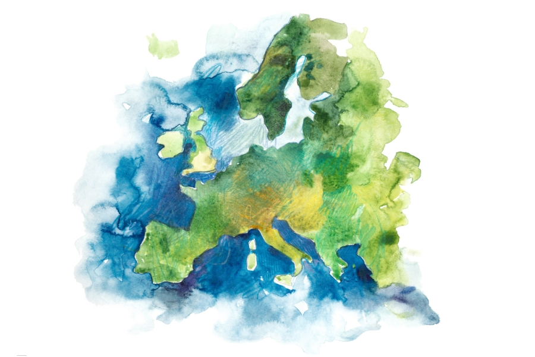

Kompletní logistika
Nakládka, zabezpečení nákladu a vykládka na místě určení.
Specializujeme se na stěhování do zahraničí – zejména do Německa, Rakouska, Nizozemska a Švýcarska. S dodávkou do 3,5 t a znalostí evropských tras jsme u vás dřív než kamion – a za lepší cenu.
ZÍSKAT CENOVOU NABÍDKU ZDARMAStěhování do cizí země je náročný proces. Díky zkušenostem z evropských tras vám nabízíme kompletní servis, kde se o vše postaráme tak, jako by šlo o náš vlastní majetek.
Nakládka, zabezpečení nákladu a vykládka na místě určení.
Demontáž nábytku před cestou a jeho opětné složení v cíli.
Fixace nákladu tak, aby i po stovkách kilometrů bylo vše v bezpečí.
Optimalizujeme trasy pro rychlost i bezpečnost, s důrazem na klíčové destinace v Německu, Rakousku, Švýcarsku a Nizozemsku.
Ideální pro rychlé a levnější stěhování. Nepotřebujeme mýtné systémy ani víkendové zákazy jízd pro kamiony. Jsme u vás dřív.
Vaše věci jsou po celou dobu přepravy v rámci EU plně pojištěny.
Každá cesta je jiná. Přizpůsobíme se vašemu času i specifickým potřebám.

U mezinárodních tras neexistuje univerzální tabulka. Cenu pro vás kalkulujeme na míru podle výše uvedených faktorů.